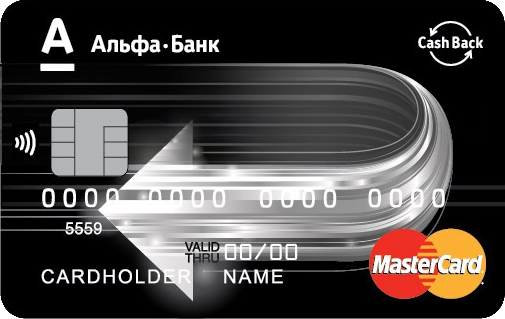

Одна из постоянных статей расходов в современной семье, конечно, АЗС. Кушать каждый день хотят не только домочадцы, но и ласточка. Бывает даже, что ласточка кушает больше, чем её пассажиры.
Исторически сложилось, что у меня в кошельке целых 5 дебетовых карт, и целая система их использования. До мая этого года система выглядела так:
- Карта Сбербанка — потому что она есть у всех и с её помощью удобно отправлять деньги кому угодно. К тому же Сбербанк хитро привязал всех родителей к детским садам и школьным столовым
- Карта Альфа-Банка — когда-то была основной картой, но с увлечением меня кэшбеками, отодвинулась в сторонку
- Карта Тиньков-банка — основная карта по всем расходам, которые не подходят под статьи «Продукты» и «АЗС». Кэшбек 1% со всего, но дело не в этом.
- Карты Промсвязьбанка — одной картой я платил в супермаркетах (3% кэшбека в последнее время), второй — на АЗС (5% кэшбека).
С октября 2014 года, когда я завёл карты Промсвязьбанка, в качестве кэшбека мне вернули 22089 рублей.
Осенью прошлого года Альфа-банк тоже ворвался на рынок кэшбек-карт, меня даже звали в VIP-офис, но условия по карте не показались выгодными. С одной стороны, банк стал возвращать 10% трат за АЗС и 5% трат в кафе ресторанах, с другой стороны, чтобы иметь право на кэшбек, нужно было тратить по карте не меньше 30000 рублей в месяц. В случае использования этой карты, карты других банков оказались бы невостребованными, поэтому математика оказалась не в пользу Альфа-банка.
Карту я тогда заказывать не стал.
Ситуация поменялась весной этого года. Маркетологи Альфа-банка, вероятно, не впечатлились результатами акции, и условия использования сделали более лояльными. Совокупный размер трат снизили на треть, до 20 тысяч рублей.
Я немного посчитал на калькуляторе, и решил попробовать.

Краткие условия использования карты такие:
- стоимость использования — 1200 рублей в год, списывается раз в год
- максимальный кэшбек в рамках пакета услуг «Оптимум» — 2000 рублей в месяц
- необходимый для кэшбека месячный оборот по карте — 20000 рублей
Теперь вместо пяти карт банков в моём бумажнике останется только три, и в первых числах мая, после зачисления кэшбека за апрель, я поеду в Промсвязьбанк закрывать карты и договор.
Не нужно забывать, что бонусная программа действует и на АЗС «Газпромнефть», где я заправляюсь. Начальная скидка по картам равна 3%. Если тратить больше 6000 рублей в месяц, то 4%, а, если больше 12000 рублей, то целых 5%. Таким образом бензин дешевле на 14% становится абсолютно реальным.